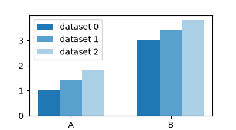

matplotlib.axes.Axes.grouped_bar#
- Axes.grouped_bar(heights, *, positions=None, group_spacing=1.5, bar_spacing=0, tick_labels=None, labels=None, orientation='vertical', colors=None, **kwargs)[source]#
Make a grouped bar plot.
Added in version 3.11: The API is still provisional. We may still fine-tune some aspects based on user-feedback.
Grouped bar charts visualize a collection of categorical datasets. Each value in a dataset belongs to a distinct category and these categories are the same across all datasets. The categories typically have string names, but could also be dates or index keys. The values in each dataset are represented by a sequence of bars of the same color. The bars of all datasets are grouped together by their shared categories. The category names are drawn as the tick labels for each bar group. Each dataset has a distinct bar color, and can optionally get a label that is used for the legend.
Example:
grouped_bar([dataset_0, dataset_1, dataset_2], tick_labels=['A', 'B'], labels=['dataset 0', 'dataset 1', 'dataset 2'])
(
Source code,png)
- Parameters:
- heightslist of array-like or dict of array-like or 2D array or pandas.DataFrame
The heights for all x and groups. One of:
list of array-like: A list of datasets, each dataset must have the same number of elements.
# category_A, category_B dataset_0 = [value_0_A, value_0_B] dataset_1 = [value_1_A, value_1_B] dataset_2 = [value_2_A, value_2_B]
Example call:
grouped_bar([dataset_0, dataset_1, dataset_2])
dict of array-like: A mapping from names to datasets. Each dataset (dict value) must have the same number of elements.
Example call:
data_dict = {'ds0': dataset_0, 'ds1': dataset_1, 'ds2': dataset_2} grouped_bar(data_dict)
The names are used as labels, i.e. this is equivalent to
grouped_bar(data_dict.values(), labels=data_dict.keys())
When using a dict input, you must not pass labels explicitly.
a 2D array: The rows are the categories, the columns are the different datasets.
dataset_0 dataset_1 dataset_2 category_A ds0_a ds1_a ds2_a category_B ds0_b ds1_b ds2_b
Example call:
categories = ["A", "B"] dataset_labels = ["dataset_0", "dataset_1", "dataset_2"] array = np.random.random((2, 3)) grouped_bar(array, tick_labels=categories, labels=dataset_labels)
-
The index is used for the categories, the columns are used for the datasets.
df = pd.DataFrame( np.random.random((2, 3)), index=["A", "B"], columns=["dataset_0", "dataset_1", "dataset_2"] ) grouped_bar(df)
i.e. this is equivalent to
grouped_bar(df.to_numpy(), tick_labels=df.index, labels=df.columns)
Note that
grouped_bar(df)produces a structurally equivalent plot likedf.plot.bar().
- positionsarray-like, optional
The center positions of the bar groups. The values have to be equidistant. If not given, a sequence of integer positions 0, 1, 2, ... is used.
- tick_labelslist of str, optional
The category labels, which are placed on ticks at the center positions of the bar groups. If not set, the axis ticks (positions and labels) are left unchanged.
- labelslist of str, optional
The labels of the datasets, i.e. the bars within one group. These will show up in the legend.
- group_spacingfloat, default: 1.5
The space between two bar groups as a multiple of bar width.
The default value of 1.5 thus means that there's a gap of 1.5 bar widths between bar groups.
- bar_spacingfloat, default: 0
The space between bars as a multiple of bar width.
- orientation{"vertical", "horizontal"}, default: "vertical"
The direction of the bars.
- colorslist of color, optional
A sequence of colors to be cycled through and used to color bars of the different datasets. The sequence need not be exactly the same length as the number of provided y, in which case the colors will repeat from the beginning.
If not specified, the colors from the Axes property cycle will be used.
- **kwargs
Rectangleproperties Properties applied to all bars. The following properties additionally accept a sequence of values corresponding to the datasets in heights:
edgecolor
facecolor
linewidth
linestyle
hatch
Property
Description
a filter function, which takes a (m, n, 3) float array and a dpi value, and returns a (m, n, 3) array and two offsets from the bottom left corner of the image
float or None
unknown
bool
antialiasedoraabool or None
(left, bottom, width, height)
CapStyleor {'butt', 'projecting', 'round'}BboxBaseor Nonebool
Patch or (Path, Transform) or None
color or None
color or None
color or None
bool
str
{'/', '\', '|', '-', '+', 'x', 'o', 'O', '.', '*'}
unknown
color or 'edge' or None
unknown
bool
JoinStyleor {'miter', 'round', 'bevel'}object
{'-', '--', '-.', ':', '', ...} or (offset, on-off-seq)
float or None
bool
list of
AbstractPathEffectNone or bool or float or callable
bool
(scale: float, length: float, randomness: float)
bool or None
str
bool
unknown
unknown
(float, float)
unknown
float
- Returns:
- _GroupedBarReturn
A provisional result object. This will be refined in the future. For now, the guaranteed API on the returned object is limited to
the attribute
bar_containers, which is a list ofBarContainer, i.e. the results of the individualbarcalls for each dataset.a
remove()method, that remove all bars from the Axes. See alsoArtist.remove().
See also
barA lower-level API for bar plots, with more degrees of freedom like individual bar sizes and colors.
Notes
For a better understanding, we compare the
grouped_barAPI with those ofbarandboxplot.Comparison to bar()
grouped_barintentionally deviates from thebarAPI in some aspects.bar(x, y)is a lower-level API and places bars with height y at explicit positions x. It also allows to specify individual bar widths and colors. This kind of detailed control and flexibility is difficult to manage and often not needed when plotting multiple datasets as a grouped bar plot. Therefore,grouped_barfocusses on the abstraction of bar plots as visualization of categorical data.The following examples may help to transfer from
bartogrouped_bar.Positions are de-emphasized due to categories, and default to integer values. If you have used
range(N)as positions, you can leave that value out:bar(range(N), heights) grouped_bar([heights])
If needed, positions can be passed as keyword arguments:
bar(x, heights) grouped_bar([heights], positions=x)
To place category labels in
baryou could use the argument tick_label or use a list of category names as x.grouped_barexpects them in the argument tick_labels:bar(range(N), heights, tick_label=["A", "B"]) bar(["A", "B"], heights) grouped_bar([heights], tick_labels=["A", "B"])
Dataset labels, which are shown in the legend, are still passed via the label parameter:
bar(..., label="dataset") grouped_bar(..., label=["dataset"])
Comparison to boxplot()
Both,
grouped_barandboxplotvisualize categorical data from multiple datasets. The basic API on tick_labels and positions is the same, so that you can easily switch between plotting all individual values asgrouped_baror the statistical distribution per category asboxplot:grouped_bar(values, positions=..., tick_labels=...) boxplot(values, positions=..., tick_labels=...)
{kind=link}
{kind=link}